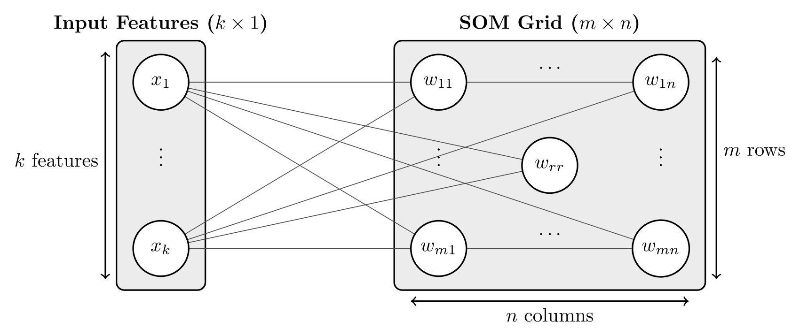
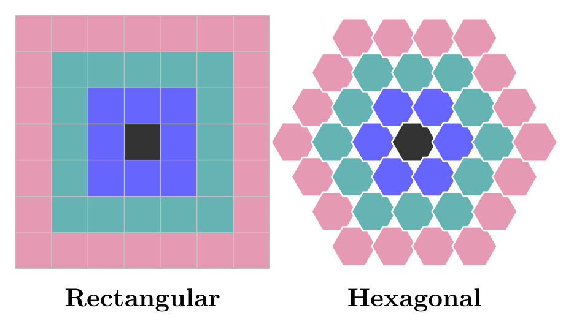

Basic Concepts¶
This page introduces the fundamental concepts behind Self-Organizing Maps (SOMs) and how they work.
What is a Self-Organizing Map?¶
A Self-Organizing Map (SOM), also known as a Kohonen map, is an unsupervised neural network algorithm that:
Clusters similar data points together
Reduces dimensionality by mapping high-dimensional data to a lower-dimensional grid, usually 2D
Preserves topology by keeping similar data points close together on the map
Visualizes patterns in complex, high-dimensional datasets
Key Characteristics:
Unsupervised: No labeled data required
Competitive learning: Neurons compete to represent input data
Topology preservation: Maintains neighborhood relationships
Dimensionality reduction: Maps N-dimensional data to 2D grid
{kind=link}

How SOMs Work¶
The SOM Algorithm¶
Initialize weight vectors randomly for each neuron
Present input data to the network
Find the Best Matching Unit (BMU) - the neuron most similar to input
Update the BMU and its neighbors to be more similar to the input
Repeat until convergence or maximum iterations reached
Mathematical Foundation¶
Setup and notation A SOM approximates a distribution over an input space \(\mathcal{X} \subseteq \mathbb{R}^d\) by a two-dimensional lattice of \(I \times J\) neurons. Each neuron at grid position \((i, j)\), with \(i \in \{1, \dots, I\}\) and \(j \in \{1, \dots, J\}\), carries a codebook (weight) vector \(\mathbf{w}_{ij} \in \mathbb{R}^l\) with \(l = d\), and the full parameter set is the tensor
Training uses a data set \(\{\mathbf{x}_k\}_{k=1}^{N} \subset \mathbb{R}^d\) over epochs \(t \in \{0, 1, \dots, T\}\).
Best matching unit and projection Similarity in feature space is measured by a distance \(\delta\) (see 4. Distance Functions). For an input \(\mathbf{x}\), the Best Matching Unit (BMU) is the neuron whose codebook minimizes \(\delta\):
which induces a projection onto grid coordinates and a latent codebook retrieval:
The latent vector \(\mathbf{z}\) is the representation used for clustering, visualization, and just-in-time learning (JITL) retrieval.
Competitive update A SOM learns by a neighborhood-weighted competitive rule rather than gradient descent: at each step the BMU for the presented sample \(\mathbf{x}\) is found, and each neuron is moved toward \(\mathbf{x}\) by a step scaled by its grid proximity to the BMU:
where:
\(\mathbf{w}_{ij}(t) \in \mathbb{R}^l\): codebook vector of neuron \((i, j)\) at epoch \(t\)
\(\alpha(t) \in \mathbb{R}^+\): learning rate at epoch \(t\) (see the decay schedules below)
\(h_{ij}(t) \in \mathbb{R}\): neighborhood weight for neuron \((i, j)\) at epoch \(t\)
\(\mathbf{x} \in \mathbb{R}^d\): input feature vector
Core Components¶
1. Grid Topology¶
SOMs arrange neurons in a regular grid structure, which determines the map’s topology and neighborhood relationships:
- Rectangular Grid
Simple, intuitive visualization
Suitable for most applications
- Hexagonal Grid
Uniform neighborhood distances
Reduces topology errors, often preferred for advanced analysis
- Periodic Boundary Conditions (PBC)
Available for both rectangular and hexagonal grids
Opposite edges of the map are identified, eliminating boundary artifacts at the borders
Useful when the input space has no natural boundary (e.g., cyclic features, angular data) or when uniform neuron utilization is required across the entire map
Under periodic boundary conditions, grid distances follow the minimum-image convention:
where \(\gamma(\cdot)\) maps a grid index to its coordinates and \(\mathcal{S}\) enumerates translations by the grid periods (\(\mathcal{S} = \{\mathbf{0}\}\) without PBC), so neighborhoods wrap across boundaries and corner neurons are not penalized.
{kind=link}

2. Neighborhood Function¶
The neighborhood function determines how much each neuron is influenced by the BMU during weight updates. Let \(\rho \coloneqq d_{\mathrm{grid}}\big((i, j), \mathrm{BMU}\big)\) denote the grid-space distance from neuron \((i, j)\) to the BMU, induced by the lattice geometry. TorchSOM provides four neighborhood kernels of width \(\sigma(t)\):
- Gaussian (most common):
- \[h_{ij}^{\mathrm{gaussian}}(t) \coloneqq \exp\left(-\frac{\rho^2}{2\,\sigma(t)^2}\right)\]
- Mexican hat (the Ricker wavelet rescaled to a unit peak; it dips below zero in an outer ring, so \(h_{ij}(t) \in \mathbb{R}\)):
- \[h_{ij}^{\mathrm{mexican}}(t) \coloneqq \left(1 - \frac{\rho^2}{4\,\sigma(t)^2}\right) \exp\left(-\frac{\rho^2}{2\,\sigma(t)^2}\right)\]
- Bubble:
- \[h_{ij}^{\mathrm{bubble}}(t) \coloneqq \mathbb{I}\big(\rho \le \sigma(t)\big)\]
- Triangle:
- \[h_{ij}^{\mathrm{triangle}}(t) \coloneqq \max\left(0,\, 1 - \frac{\rho}{\sigma(t)}\right)\]
The grid distance is computed in the map space, not the input feature space. On a rectangular grid it is Euclidean in the neuron coordinates,
where \((c_i, c_j)\) are the BMU coordinates and \((i, j)\) those of neuron \(\mathbf{w}_{ij}\) (periodic boundaries wrap this distance; see 1. Grid Topology).
Discrete neighborhoods are controlled by an integer order \(o \in \mathbb{N}^+\). On a rectangular grid, the order-\(o\) neighborhood of the BMU at \((i, j)\) is the Chebyshev ball
a \((2o + 1) \times (2o + 1)\) block of neurons; the hexagonal grid uses the analogous hop-distance rings. The order \(o\) sets the support of the discrete weight update and the sample-retrieval neighborhoods used for JITL (the neighborhood_order parameter and the collect_samples retrieval modes).
3. Schedule Learning Rate and Neighborhood Radius Decay¶
Learning Rate Decay¶
The learning rate \(\alpha(t)\) controls the magnitude of weight vector updates during training, directly influencing convergence speed and final map quality.
- Inverse Decay:
- \[\alpha(t+1) \coloneqq \alpha(t) \cdot \frac{\gamma}{\gamma + t}\]
- Linear Decay:
- \[\alpha(t+1) \coloneqq \alpha(t) \cdot \left( 1 - \frac{t}{T} \right)\]
These schedulers guarantee convergence to \(\alpha(T) = 0\), corresponding to zero weight updates in the final training phase, which is essential for achieving precise local weight adjustments.
Neighborhood Radius Decay¶
The neighborhood radius controls the size of the neighborhood of the BMU during weight updates.
- Inverse Decay:
- \[\sigma(t+1) \coloneqq \frac{\sigma(t)}{1 + t \cdot \frac{\sigma(t) - 1}{T}}\]
- Linear Decay:
- \[\sigma(t+1) \coloneqq \sigma(t) + t \cdot \frac{1 - \sigma(t)}{T}\]
These schedulers guarantee convergence to \(\sigma(T) = 1\), corresponding to single-neuron updates in the final training phase, which is essential for achieving precise local weight adjustments.
Asymptotic Decay¶
For arbitrary dynamic parameters requiring exponential-like decay characteristics, TorchSOM implements a general asymptotic decay scheduler:
where:
\(\alpha(t) \in \mathbb{R}^+\): learning rate at iteration \(t\)
\(\sigma(t) \in \mathbb{R}^+\): neighborhood function width at iteration \(t\)
\(\theta(t) \in \mathbb{R}^+\): general dynamic parameter at iteration \(t\)
\(T \in \mathbb{N}\): total number of training iterations
\(t \in \{0, 1, \ldots, T\}\): current iteration index
\(\gamma \in \mathbb{R}^+\): inverse decay rate parameter, typically \(\gamma = T/100\)
4. Distance Functions¶
The feature-space distance \(\delta\) used by the BMU search is configurable. Writing \(x_a\) and \(w_a\) for the \(a\)-th components:
- Euclidean:
- \[\delta_{\mathrm{euclidean}}(\mathbf{x}, \mathbf{w}) \coloneqq \sqrt{\sum_{a=1}^{d} (x_a - w_a)^2}\]
- Manhattan:
- \[\delta_{\mathrm{manhattan}}(\mathbf{x}, \mathbf{w}) \coloneqq \sum_{a=1}^{d} |x_a - w_a|\]
- Cosine:
- \[\delta_{\mathrm{cosine}}(\mathbf{x}, \mathbf{w}) \coloneqq 1 - \frac{\mathbf{x} \cdot \mathbf{w}}{\lVert \mathbf{x} \rVert\, \lVert \mathbf{w} \rVert}\]
- Chebyshev:
- \[\delta_{\mathrm{chebyshev}}(\mathbf{x}, \mathbf{w}) \coloneqq \max_{a \le d} |x_a - w_a|\]
where \(\mathbf{x}, \mathbf{w} \in \mathbb{R}^d\) and \(d \in \mathbb{N}\) is the number of features.
5. Quality Metrics¶
Quantization Error (QE)
Average distance between data points and their BMUs. Lower is better; it measures how well the map represents the data.
Topographic Error (TE)
Fraction of data points whose BMU and second-BMU are not grid-adjacent. Lower is better; it measures topology preservation.
where:
\(N \in \mathbb{N}\): number of training samples
\(\mathbf{x}_k \in \mathbb{R}^d\): the \(k\)-th input sample
\(\mathrm{BMU}_2(\mathbf{x}_k)\): the second-closest neuron in feature space
\(d_{\mathrm{th}} \in \mathbb{R}^+\): grid-adjacency threshold (typically \(d_{\mathrm{th}} = 1\))
\(\mathbb{I}(\cdot) \in \{0, 1\}\): indicator function
Strengths and Weaknesses¶
Advantages¶
No assumptions about data distribution
Topology preservation maintains relationships
Intuitive visualization of complex data
Unsupervised learning - no labels needed
Limitations¶
Calculations can be expensive for large datasets
Parameter selection is important - requires tuning
Interpretation challenges for very high dimensions
Best Practices¶
Data Preparation¶
Normalize features to similar scales
Remove highly correlated features
Handle missing values appropriately
Consider dimensionality reduction for very high dimensions
Parameter Selection¶
Experiment with different topologies and functions
Monitor training progress with error curves to guide parameter choice
Interpretation¶
Use multiple visualizations to understand the map
Combine with domain knowledge for meaningful insights
Validate findings with other analysis methods
Document parameter choices for reproducibility
Next steps¶
Now that you understand the basics, explore:
Package Architecture — How these concepts map to the package structure and APIs
Topologies & Boundary Conditions — Choosing a topology and periodic boundary conditions
Training — Decay schedules and training configuration
Visualization Gallery — Visualization gallery
Quick Start — A minimal end-to-end example